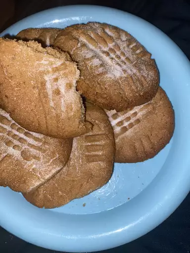

Peanut butter cookies!

Description
These cookies require only three ingredients. Can you believe it! These tasty cookies won't take that long to make and bake allowing you to quickly statfiy your taste buds :3
ingredients
- 1 cup peanut butter
- 1 cup white sugar
- 1 egg
Directions
- Preheat the oven to 350 degress F. Line baking sheet with parchment paper.
- Mix peanut butter, sugar, and eggs until smooth. Roll mixture into 1-inch balls and place 1 inch apart on an ungreased baking sheet flatten each with a fork making a criss-cross pattern
- Bake in oven for 6 -8 minutes until golden brown at the bottom. Cool on baking sheets before transfering them to a wire rack.